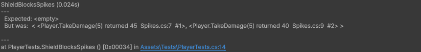

Check what the code under test did
Spy on a member
A spy lets the real member run, and records each access the code under test makes that its selection matches:
SpiedMethod<GameObject> spawned = Spy.Method(() => Object.Instantiate(bulletPrefab));
turret.Fire();
Assert.That(spawned.Calls, Has.Count.EqualTo(3));
Assert.That(spawned.Calls.Results, Has.All.Not.Null);A spy records from the moment it is created, so a spy created after the test's setup code doesn't count the calls that code made. A stub and a fake record exactly what a spy of the same kind records.
What a spy records
| Member kind | List | Each item holds |
|---|---|---|
| Method, constructor | Calls | Instance, Arguments, Exception, Order, and Result for a call with a result |
| Field, property, indexer | Reads, Writes | Instance, Arguments (the indices), Content, Exception, Order |
| Event | Handlers | Instance, Handler, Order |
| Event | Invocations | Instance, Arguments, HadHandlers, Order |
| Catch spy | Catches | Exception, Rethrown, Method, Line, Order |
Calls.Results, Reads.Contents and Writes.Contents list only the results or
contents, for a direct comparison:
SpiedField<int> health = Spy.Field(() => player.health);
player.TakeDamage(50);
player.TakeDamage(50);
Assert.That(health.Writes.Contents, Is.EqualTo(new[] { 50, 0 }));A call or access that throws is recorded too, with its exception in Exception, which is null otherwise:
SpiedProperty<float> volume = Spy.Property(() => settings.Volume);
menu.SetVolume(-1f);
Assert.That(volume.Writes[0].Exception, Is.InstanceOf<ArgumentOutOfRangeException>());A stub records the exception its answer throws the same way.
A recorded call holds the arguments themselves, so an object the code under test changes after the call shows its new state.
What the test itself does is never recorded: its Raise, its direct calls and reads. What the code under test does
in response is.
Check records with NUnit
Understudy has no assertion API: every list is an ordinary read-only list, checked with NUnit constraints and filtered with LINQ. A narrow selection is often the simplest filter, and a table's indexer gives what was recorded on one instance:
SpiedMethod enemyDestroyed = Spy.Method(() => Object.Destroy(enemy.gameObject));
wave.Clear();
Assert.That(enemyDestroyed.Calls, Is.Empty);
SpiedPropertyTable<Rigidbody, Vector3> velocities = Spy.Property((Rigidbody b) => b.linearVelocity);
level.Run();
Assert.That(velocities[boss].Writes, Is.Empty);Every list is live: a list held in a local follows what is recorded as the code under test runs.
Check the order of calls
Order is a sequence number shared by every spy, stub and fake in the test, so it orders accesses to
different members:
SpiedMethod save = Spy.Method(() => game.SaveGame());
SpiedMethod quit = Spy.Method(() => game.Quit());
menu.QuitToDesktop();
Assert.That(save.Calls[0].Order, Is.LessThan(quit.Calls[0].Order));The doubles that record one access give it the same Order.
Read a failed assertion
Each recorded call, access, subscription, raise and catch prints as one line written the way the code reads, with its outcome, the line of the code under test that
made the access, and its order. A failed collection constraint, such as Is.Empty, prints every item of the list; Has.Count prints only the count:
Player.TakeDamage(5) returned 45 Player.cs:42 #7
Tile[,][3, 4] read Wall (stubbed) Level.cs:18 #8
Physics.Raycast((0, 1, 0), (0, -1, 0), 10) threw IOException: disk full Sensor.cs:9 #9Values print at full precision, so two values an assertion tells apart never print the same. An access a stub
decided ends with (stubbed), one a fake decided with (faked). An instance that is a Unity
object prints as its name. An access Unity makes, such as calling a Unity message, prints no source line. Don't compare these lines in an assertion: their wording can change between versions.

Calls from the engine
Your own members are also recorded when Unity or a package calls them: Unity messages, Inspector-wired
UnityEvents, animation events, SendMessage, reflection, and package code.
SpiedMethod opened = Spy.Method(() => door.Open());
button.onClick.Invoke(); // wired to door.Open in the Inspector
Assert.That(opened.Calls, Has.Count.EqualTo(1));A member of the Unity API is recorded only where your own code calls it.